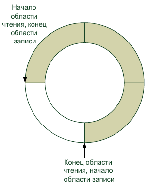
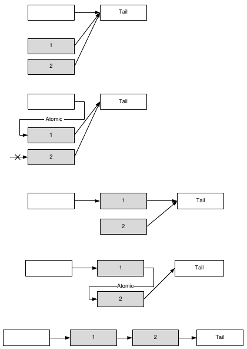

До сих пор мы пользовались самым простым методом передачи данных между потоками — данными, передаваемыми через аргументы связи сигнал–слот. Поскольку потоки могут использовать для обмена данными любую глобально видимую область памяти (т. е. область памяти, выделенную в "куче", а не в стеке процедуры потока), основная проблема заключатся в том, как обеспечить разграничение доступа к памяти между потоками. Очень часто модель взаимодействия потоков можно описать в терминах "писатель" (поток, записывающий данные в общую область памяти) и "читатель" (поток, читающий данные из общей области). В этом случае задачу разграничения доступа к памяти можно свести к требованию, чтобы читатель и писатель не производили свои операции над одной областью памяти одновременно. Если писателей несколько, они также не должны работать с одной и той же областью памяти одновременно. Сделать это можно по-разному. Например, можно представить себе модель, в которой читатель не имеет доступа ко всей общей области памяти, пока к ней имеет доступ писатель. Затем, когда писатель освобождает память, исключительный доступ к ней получает доступ читатель, и писатель ждет, когда читатель освободит память. Другие модели основаны на том факте, что ни читатель, ни писатель не выполняют операций на всем пространстве разделяемой памяти одновременно. Это значит, что писатель может работать с одним фрагментом разделяемой памяти, тогда как читатель будет работать с другим фрагментом. Очевидно, что эти модели эффективнее.
Мы рассмотрим стандартные средства, предоставляемые Qt library, и два более эффективных варианта.
Класс QSharedMemory
Класс QSharedMemory полезен при создании области памяти, разделяемой между процессами (и мы рассмотрим его подробнее в этом контексте). Однако разделение доступа к памяти с помощью QSharedMemory возможно и в случае нескольких потоков. Для потоков класс QSharedMemory может предоставить методы lock() и unlock() , первый из которых предоставляет полный доступ ко всей области памяти вызвавшему потоку и перекрывает его для остальных. Таким образом, QSharedMemory работает по первой из перечисленных выше моделей. Обсуждать класс QSharedMemory более подробно мы сейчас не будем. Все, что нужно знать об этом классе, вы прочтете в документации.
Мьютексы и семафоры
С принципом работы мьютекса мы уже знакомы. Само слово мьютекс (mutex) происходит от английских слов mutual exclusion — взаимное исключение. Назначение мьютекса заключается в том, чтобы сигнализировать, какой из потоков обладает доступом к критическому ресурсу в данный момент. Я пишу "сигнализировать", потому что ограничения, наложенные мьютексами, не являются обязательными для исполнения. Все зависит от "доброй воли" потоков. Класс Qt QMutex обладает теми же методами, что и наш "самодельный" мьютекс, рассмотренный выше. Мы останавливаемся на классе QMutex подробнее, поскольку он и его "помощник" класс QMutexLocker упрощают решение нескольких деликатных проблем многопоточного программирования. Вспомним ситуацию, описанную выше: функция, вызвавшая метод lock() мьютекса, неожиданно завершается, например в результате возникшего исключения. Можно, конечно, "завернуть" всю критическую область в такую конструкцию:
try {
} catch(...) {
mutex.unlock()
}
Но тогда и все исключения придется обрабатывать в этой же конструкции, а это может быть нежелательно по многим причинам. Функции-обертки программируются иначе. Другая ситуация — функция со многими точками выхода. Как правило, мы хотим, чтобы перед выходом из функции был вызван метод unlock(). Если функция обладает многими точками выхода, мы можем просто забыть вызвать unlock() перед одной из них. В результате возникнет ошибка, которая будет проявлять себя лишь в некоторых, возможно, довольно редких случаях.
Разработчики Qt предлагают следующее решение этой проблемы: в функции в качестве локальной переменной создается объект класса QMutexLocker . Конструктору объекта передается указатель на объект класса QMutex (который может быть создан где угодно). Объект QMutexLocker пытается вызвать метод lock() переданного ему объекта QMutex, и как только эта операция завершается успехом, выполнение процедуры продолжается. Вы можете открыть мьютекс явным образом, вызвав метод unlock() объекта QMutexLocker . Если же вы этого не сделаете, метод unlock() будет вызван в момент уничтожения переменной QMutexLocker (а поскольку переменная локальная, это уничтожение произойдет при любом выходе из функции, соответствующем правилам C++, в том числе при выходе в результате исключения). Вот так просто. Используя локальную переменную типа QMutexLocker , можно написать функцию, позволяющую нескольким потокам добавлять записи в список stringList (листинг 5.14).
Листинг 5.14. Использование класса QMutexLocker
void TextDevice::write(const QString &text)
{
QMutexLocker locker(&mutex);
stringList->append(text);
}
Обратите внимание, что объект QMutexLocker создается в стеке функции. Этот код эквивалентен представленному в листинге 5.15, с тем отличием, что в листинге 5.14 мьютекс будет открыт по выходе из функции write(), даже если этот выход произойдет в результате исключения.
Листинг 5.15. Аналог функции добавления записей без использования QMutexLocker
void TextDevice::write(const QString &text )
{
mutex.lock();
stringList->append(text);
mutex.unlock();
}
ПРИМЕЧАНИЕ
Обратите внимание на то, что в отличие от нашего демонстрационного мьютекса (листинг 5.10), закрытый мьютекс QMutex нельзя открыть из другого потока. Впрочем, это все равно не мешает при желании обойти ограничения, налагаемые мьютексами.
Мы можем использовать этот же трюк в нашем классе ExtThread . Нам, как вы помните, необходимо, чтобы метод done() вызывался перед завершением работы метода run() . Мы можем "автоматизировать" вызов done() , если внесем в класс ExtThread небольшие изменения (листинг 5.16).
Листинг 5.16. Новая версия класса ExtThread
class ExitHelper;
class ExtThread : public QThread
{
Q_OBJECT
public:
explicit ExtThread(QObject *parent = 0);
bool pause();
bool resume();
bool wait(unsigned long time = ULONG_MAX);
ExtThreadStates getCurrentState();
void start();
signals:
void paused();
void resumed();
public slots:
void quit();
protected:
friend class ExitHelper;
bool CancellationPoint();
bool pauseFor(unsigned long milliseconds = ULONG_MAX);
virtual void beforeQuit();
void done();
private:
QAtomicInt currentState;
};
class ExitHelper
{
public:
explicit ExitHelper(ExtThread * thread)
{
this->thread = thread;
}
~ExitHelper()
{
thread->done();
}
private:
ExtThread * thread;
};
В метод CancellationPoint() тоже придется внести изменения (листинг 5.17).
Листинг 5.17. Новая версия CancellationPoint()
bool ExtThread::CancellationPoint()
{
if (currentState == Finishing)
return true;
bool toSleep = false;
while (currentState == Sleeping) {
if (!toSleep) {
emit paused();
toSleep = true;
}
yieldCurrentThread();
}
if (toSleep)
emit resumed();
if (currentState == Finishing)
return true;
return false;
}
Поскольку теперь метод done() будет вызываться неявно, нам не следует вызывать его явно, внутри CancellationPoint() , иначе метод будет вызван дважды. В этой версии и метод run() , перекрываемый в потомках ExtThread , будет выглядеть подругому (листинг 5.18).
Листинг 5.18. Новые правила для метода run()
void FileFinder::run()
{
ExitHelper onExit(this);
...
}
Теперь нам не нужно беспокоиться о вызове done() перед каждым оператором return . Подобные приемы гарантируют выполнение определенных действий, связанных с завершением потока, даже в случае возникновения исключения. Но само исключение должно быть где-то обработано, иначе программа, скорее всего, аварийно завершится, и наши действия окажутся бесполезными. Для предотвращения такой ситуации нужно весь код функции run() поместить в какую-нибудь дополнительную функцию, например runInternal(), и вызывать ее из функции run() , заключив в конструкцию try – catch.
Семафоры представляют собой более сложные структуры по сравнению с мьютексами. Если мьютекс используется для разграничения доступа к одному критическому ресурсу, семафоры могут защищать несколько критических ресурсов одновременно. С помощью метода acquire() класса QSemaphore мы можем указать, сколько именно разделяемых ресурсов (например, слотов разделяемой памяти) мы хотим получить. Количество ресурсов передается методу в качестве параметра. Если требуемого количества свободных ресурсов нет, поток будет заблокирован до тех пор, пока они не появятся. Метод release() освобождает ресурсы, захваченные методом acquire(). Как и в случае acquire() , вы можете указать количество освобождаемых ресурсов, которое может не совпадать с количеством захваченных. Семафоры полезны в ситуации, когда n потоков пытаются получить доступ к m ресурсам, причем каждому потоку нужно r ресурсов и r * n > m.
В документации Qt сказано, что лучшее применение семафоров — разграничение доступа потоков к кольцевому буферу. В числе примеров, которыми сопровождается Qt, есть и пример использования семафоров вместе с кольцевым буфером. К этому нечего добавить, за исключением того, что далее будет рассмотрен кольцевой буфер, который вообще не нуждается в примитивах синхронизации, таких как семафоры и мьютексы. Правда, этот тип буфера можно использовать только в одной, зато весьма распространенной, ситуации.
Еще один интересный примитив синхронизации — класс QWaitCondition. С помощью объектов этого класса поток может заставить один или несколько других потоков приостановить свою работу до наступления некоторого события. Ожидающие потоки приостанавливают свое выполнение, вызывая метод wait() объекта QWaitCondition . Когда управляющий поток должен разрешить возобновление выполнения ожидающих потоков, он вызывает метод wakeOne(), если необходимо возобновить работу одного, случайно выбранного потока, или WakeAll(), если требуется возобновить выполнение всех ожидающих потоков.
Методу wait() в качестве параметра можно передать либо указатель на объект QMutex , либо указатель на объект QReadWriteLock. В момент вызова wait() QMutex и QReadWriteLock должны быть открыты. В момент выхода из метода wait() соответствующий объект ( QMutex или QReadWriteLock ) закрывается и гарантирует потоку исключительный доступ к тому, к чему поток обращается после выхода из wait() . Это сделано для того, чтобы не возник конфликт доступа между "разбуженными потоками". Фактически мы имеем атомарную операцию "ждать наступления произвольного события и закрыть доступ к критическому ресурсу, когда оно наступит".
ПРИМЕЧАНИЕ
А если ожидающим потокам нечего делить между собой? Тогда каждый из них может использовать свой собственный мьютекс.
Кольцевой буфер без блокировок
В последнее время широкую популярность приобретают безблокировочные (lockless) алгоритмы доступа к разделяемой памяти. Безблокировочные алгоритмы отличаются от традиционных алгоритмов следующим:
Все вышеперечисленное делает безблокировочные алгоритмы более эффективными по сравнению с традиционными. Вызов того же мьютекса или семафора очень часто бывает весьма дорогостоящей операцией (в смысле машинного времени). Алгоритм, который обходится без этой операции, может существенно сэкономить время процессора. Отсутствие необходимости ждать во время блокировки — весьма заметный фактор ускорения. По безблокировочным алгоритмам существует довольно много публикаций (в основном, в научных журналах, т. к. применение этих алгоритмов еще не стало преобладающей тенденцией программирования). Мы рассмотрим два таких алгоритма, которые уже хорошо зарекомендовали себя в деле.
Рассмотрим ситуацию "один писатель — один читатель" (я надеюсь, что эта книга не попадет в подобную ситуацию!). Отличным средством обмена данными между одним писателем и одним читателем является кольцевой буфер (рис. 5.4) Действительно, в кольцевом буфере запись и чтение всегда будут происходить в разных областях разделяемой памяти. При этом в описываемой ситуации кольцевому буферу не требуются примитивы синхронизации. Мы реализуем кольцевой буфер в классе CircularBuffer (листинг 5.19).

Рис. 5.4. Кольцевой буфер
Листинг 5.19. Класс CircularBuffer
class CircularBuffer : public QObject
{
Q_OBJECT
public:
explicit CircularBuffer(quint32 bufSize, QObject *parent = 0);
~CircularBuffer();
quint32 read(void * buf, quint32 bufSize, quint32 blockSize = 1);
quint32 write(void * buf, quint32 bufSize, quint32 blockSize = 1);
bool wouldWriteBlock(quint32 blockSize);
bool wouldReadBlock(quint32 blockSize);
quint32 freeSpace();
quint32 bytesAvailable();
void reset();
void stop();
bool isEOF();
signals:
void bufferFull();
void bufferEmpty();
void dataAdded(quint32 size);
void hasFreeSpace(quint32 size);
void reachedEOF();
private:
void exposeSingleBufferWrite(void ** buffer, quint32 * bytes);
void exposeSingleBufferRead(void ** buffer, quint32 * bytes);
void addBytesWritten(quint32 bytes);
void addBytesRead(quint32 bytes);
quint32 bufSize;
char * buffer;
quint64 writePos;
quint64 readPos;
bool eof;
bool stopped;
protected:
void connectNotify(const char * signal);
};
Рассмотрим сначала публичный интерфейс класса. В конструкторе буфера можно указать его размер в байтах. Что делают методы read() и write(), в общем, должно быть понятно. Необходимо, однако, пояснить некоторые нюансы. Ни один из методов класса CircularBuffer не является блокирующим. Методы read() и write() возвращают количество байтов (соответственно, прочитанных или записанных). Если метод read() не смог прочитать данные по какой-либо причине (обычно потому, что в буфере нет данных), он возвращает значение 0. Точно так же ведет себя метод write() , если он не смог записать данные в буфер, например, потому что буфер заполнен. Функция freeSpace() возвращает объем свободного места (в байтах), если вы хотите знать, будет ли вызов write() успешен, вызовите сначала эту функцию.
ПРИМЕЧАНИЕ
Поскольку буфер предназначен для модели с одним писателем, фактический объем свободного места в буфере не может уменьшиться в промежуток между вызовами freeSpace() и write(). Он может только увеличиться.
Аналогичным образом функция bytesAvailable() возвращает количество байтов, доступных для чтения. И точно так же, как в случае с freeSpace(), это значение не может уменьшиться до очередного вызова read() . Второй параметр методов read() и write() позволяет задать размер минимального блока записи или чтения. По умолчанию этот параметр имеет значение 1 (1 байт), но очень часто мы передаем данные блоками фиксированного размера (например, экземплярами структур, или даже простыми типами, размер которых превышает 1 байт). В этом случае полезно указывать размер блока. Если количество байтов, доступных для чтения или записи, меньше размера блока, то соответствующий метод (read() или write() ) ничего не сделает и вернет значение 0. При использовании блоков одинакового размера при чтении и записи такого, конечно, не должно происходить. Если размер используемых блоков превышает 1 байт, то при создании буфера крайне рекомендуется выбирать размер буфера кратным размеру блока. Метод write() может записать меньше данных, чем вы потребовали (если количество данных не превышает значение, возвращенное методом freeSpace() , то этого не случится). Рекомендуется, однако, проверять значение, которое возвращает метод. То же относится и к методу read().
Методы wouldWriteBlock() и wouldWriteBlock() позволяют определить, можно ли записать в буфер или прочитать из буфера определенное количество байтов. Фактически это другой вариант методов freeSpace() и bytesAvailable() .
Метод isEOF() очень важен. Допустим, что метод read() вернул значение 0. Это означает, что в буфере нет данных. Но почему? Возможно, писатель просто не успел записать данные в буфер и надо немного подождать. Но может быть и так, что писатель закончил записывать данные в буфер и ждать больше нечего. Когда писатель заканчивает запись данных в буфер, он вызывает метод stop(), которым объявляет, что больше в буфер ничего писать не будет. Если после вызова stop() в буфере все еще имеются какие-то данные, читатель будет читать их как обычно, но когда данные закончатся, будет эмитирован сигнал reachedEOF(), а метод isEOF() вернет значение true. Таким образом, читатель может узнать, что не следует ждать появления новых данных в буфере. Метод reset() возвращает буфер в то состояние, в котором он находился сразу после создания. Во избежание конфликтов этот метод следует вызывать тогда, когда ни писатель, ни читатель работать с буфером не будут (например, при получении сигнала reachedEOF() ). Метод reset() сбрасывает состояние, установленное методом stop() , сбрасывает флаг eof и очищает буфер. В результате буфер снова готов к передаче данных. Сигналы dataAdded() и hasFreeSpace() эмитируются после успешной операции записи или чтения соответственно. В параметрах сигналов передается не общий объем свободного места и не общее количество байт в буфере, а то количество байт, на которые изменились эти значения. Перейдем теперь к реализации класса (листинг 5.20).
Листинг 5.20. Реализация класса CircularBuffer
CircularBuffer::CircularBuffer(quint32 bufSize,
QObject *parent) :
QObject(parent)
{
this->bufSize = bufSize;
buffer = new char[bufSize];
reset();
}
CircularBuffer::~CircularBuffer()
{
delete[] buffer;
}
void CircularBuffer::exposeSingleBufferWrite(void **buffer,
quint32 *bytes)
{
quint64 writePtrPos = writePos % bufSize;
quint64 readPtrPos = readPos % bufSize;
*buffer = &(this->buffer[writePtrPos]);
if (writePtrPos > readPtrPos) {
*bytes = bufSize — writePtrPos;
} else {
if (writePtrPos == readPtrPos) {
*bytes = bufSize — writePos + readPos;
if (*bytes > bufSize — writePtrPos)
*bytes = bufSize — writePtrPos;
} else {
*bytes = readPtrPos — writePtrPos;
}
}
}
void CircularBuffer::exposeSingleBufferRead(void **buffer,
quint32 *bytes)
{
quint64 writePtrPos = writePos % bufSize;
quint64 readPtrPos = readPos % bufSize;
*buffer = &(this->buffer[readPtrPos]);
if (writePtrPos > readPtrPos) {
(*bytes) = writePtrPos — readPtrPos;
} else {
if (writePtrPos == readPtrPos) {
*bytes = writePos — readPos;
if (*bytes > bufSize — readPtrPos)
*bytes = bufSize — readPtrPos;
} else {
*bytes = bufSize — readPtrPos;
}
}
}
void CircularBuffer::addBytesWritten(quint32 bytes)
{
writePos += bytes;
emit dataAdded(bytes);
if (writePos == readPos + bufSize)
emit bufferFull();
}
void CircularBuffer::addBytesRead(quint32 bytes)
{
readPos += bytes;
emit hasFreeSpace(bytes);
if (writePos == readPos) {
emit bufferEmpty();
}
}
quint32 CircularBuffer::read(void *buf,
quint32 bufSize,
quint32 blockSize)
{
if (eof)
return 0;
void * b;
quint32 bytes;
exposeSingleBufferRead(&b, &bytes);
if ((bytes == 0) && stopped) {
eof = true;
emit reachedEOF();
}
if (bytes < blockSize)
return 0;
bytes = bytes < bufSize ? bytes : bufSize;
bytes = bytes — (bytes % blockSize);
memcpy(buf, b, bytes);
addBytesRead(bytes);
return bytes;
}
quint32 CircularBuffer::write(void *buf,
quint32 bufSize,
quint32 blockSize)
{
if (stopped)
return 0;
void * b;
quint32 bytes;
exposeSingleBufferWrite(&b, &bytes);
if (bytes < blockSize)
return 0;
bytes = bytes < bufSize ? bytes : bufSize;
bytes = bytes — (bytes % blockSize);
memcpy(b, buf, bytes);
addBytesWritten(bytes);
return bytes;
}
void CircularBuffer::reset()
{
writePos = 0;
readPos = 0;
eof = false;
stopped = false;
emit bufferEmpty();
}
void CircularBuffer::stop()
{
stopped = true;
}
bool CircularBuffer::isEOF()
{
if (!stopped)
return false;
if (!eof) {
void * b;
quint32 bytes;
exposeSingleBufferRead(&b, &bytes);
if (bytes == 0)
eof = true;
}
return eof == true;
}
bool CircularBuffer::wouldReadBlock(quint32 blockSize)
{
if (eof)
return true;
void * b;
quint32 bytes;
exposeSingleBufferRead(&b, &bytes);
return bytes < blockSize;
}
bool CircularBuffer::wouldWriteBlock(quint32 blockSize)
{
if (stopped)
return true;
void * b;
unsigned int bytes;
exposeSingleBufferWrite(&b, &bytes);
return bytes < blockSize;
}
quint32 CircularBuffer::freeSpace()
{
void * b;
quint32 bytes;
exposeSingleBufferWrite(&b, &bytes);
return bytes;
}
quint32 CircularBuffer::bytesAvailable()
{
void * b;
quint32 bytes;
exposeSingleBufferRead(&b, &bytes);
return bytes;
}
void CircularBuffer::connectNotify(const char *signal)
{
void * b;
unsigned int bytes;
exposeSingleBufferWrite(&b, &bytes);
if (bytes == bufSize)
emit bufferEmpty();
else
if (bytes == 0)
emit bufferFull();
if (bytes != 0)
emit dataAdded(bytes);
if (bytes < bufSize)
emit hasFreeSpace(bufSize — bytes);
}
Хотя наш буфер работает как кольцевой, в его основе, естественно, лежит линейная область памяти. Как вы, конечно, знаете, такой буфер содержит два указателя: один для записи, другой для чтения. Эти указатели движутся друг за другом как стрелки часов, но указатель для чтения никогда не должен обгонять указатель для записи. Проблемы возникают, когда один из указателей переходит через границу области (из конца в начало). При этом относительные положения указателей могут измениться. Например, указатель для чтения может иметь большее значение, чем указатель для записи, хотя, на самом деле, он по-прежнему отстает. Просто указатель для записи достиг верхней границы буфера и вернулся в начало. Приватные переменные writePos и readPos содержат абсолютные положения указателей, которые определяются общим количеством прочитанных и записанных байтов (если вам требуется эта информация, вы можете добавить в класс методы, возвращающие значения указанных переменных). Положения указателей относительно области памяти буфера соответствуют остаткам от целочисленного деления значения указателя на размер буфера. Сама память буфера представляется массивом переменных типа char . Даже на 64-битных машинах тип char по-прежнему имеет размер 1 байт.
При работе с нашим буфером нередко возникает ситуация, когда, например, свободная область разбивается на две части (от указателя для записи и до конца буфера и от начала буфера до указателя для чтения). Более сложная (и более эффективная) реализация буфера должна работать с обеими частями, наша упрощенная реализация работает только с одной. Это не очень страшно (снижается только быстродействие — вместо одного вызова read() или write() иногда приходится делать два), но это очень важно в другом аспекте. Если вы записываете и читаете данные фиксированными блоками, то размер буфера обязательно должен быть кратным размеру блока, иначе буфер не будет работать правильно. Методы freeSpace() и bytesAvailable() возвращают количество байтов, которое может быть записано или прочитано за один вызов соответствующего метода, т. е., например, от указателя для записи и до границы буфера. Фактические значения свободного или занятого пространства могут быть больше, чем значения, возвращенные этими методами.
Если вы хотите создать улучшенный вариант буфера, то вот вам подсказка: замените методы
void exposeSingleBufferWrite(void ** buffer, quint32 * bytes);
void exposeSingleBufferRead(void ** buffer, quint32 * bytes);
на
void exposeDoubleBufferWrite(void ** buffer1, quint32 * bytes1,
void ** buffer2, quint32 * bytes2);
void exposeDoubleBufferRead(void ** buffer1, quint32 * bytes1,
void ** buffer2, quint32 * bytes2);
Они при необходимости смогут возвращать линейные фрагменты в начале и в конце буфера одновременно (если доступен только один линейный фрагмент, в переменную, на которую указывает bytes2, следует записать значение 0). Затем переработайте методы, которые вызывают exposeSingleBufferWrite() и exposeSingleBufferRead() с учетом сделанных изменений.
Кольцевой буфер хорош для передачи данных между потоками не только тем, что он не использует примитивы синхронизации, но и тем, что он позволяет регулировать интенсивность обмена динамически. Например, частое появление сигнала bufferEmpty() может подсказать потоку-читателю, что надо снизить интенсивность опроса буфера, а частое появление сигнала bufferFull() — что интенсивность опроса необходимо, наоборот, увеличить.
Обратите внимание на метод connectNotify() . Этот виртуальный метод, который мы перекрыли в своем классе, вызывается тогда, когда один из сигналов нашего класса связывается с другим сигналом или слотом. Имя сигнала передается в параметре метода в кодировке Latin-1. На мой взгляд, метод connectNotify() полезен, в основном, тем, что с его помощью можно оповестить объекты, только что связанные с нашим объектом, о каких-то важных событиях или параметрах нашего объекта. Например, если к моменту подключения слотов объекта-читателя в буфере уже есть данные, имеет смысл послать сигнал, оповещающий читателя об этом. В нашем примере мы не проверяем, какой именно сигнал был связан, и просто эмитируем все сигналы, отражающие состояние буфера.
Для демонстрации работы кольцевого буфера мы напишем программу мониторинга псевдосигналов. Источником сигналов будет поток на основе ExtThread (листинг 5.21), который будет записывать случайные числа в четыре кольцевых буфера. Класс главного окна нашей программы будет считывать эти значения из буферов и отображать их с помощью компонентов QLCDNumber.
Листинг 5.21. Поток-генератор случайных сигналов
#ifndef SIGNALGENERATOR_H
#define SIGNALGENERATOR_H
#include "extthread.h"
class CircularBuffer;
class SignalGenerator : public ExtThread
{
Q_OBJECT
public:
explicit SignalGenerator(QObject *parent = 0);
void setBuffer(CircularBuffer * buffer, CircularBuffer * buffer2,
CircularBuffer * buffer3, CircularBuffer * buffer4);
signals:
public slots:
protected:
void run();
void beforeQuit();
private:
CircularBuffer * cb;
CircularBuffer * cb2;
CircularBuffer * cb3;
CircularBuffer * cb4;
};
#endif // SIGNALGENERATOR_H
#include "signalgenerator.h"
#include "circularbuffer.h"
#include <cstdlib>
using namespace std;
SignalGenerator::SignalGenerator(QObject *parent) :
ExtThread(parent)
{
}
void SignalGenerator::setBuffer(CircularBuffer *buffer,
CircularBuffer *buffer2,
CircularBuffer *buffer3,
CircularBuffer *buffer4)
{
cb = buffer;
cb2 = buffer2;
cb3 = buffer3;
cb4 = buffer4;
}
void SignalGenerator::run()
{
for (int i = 0; i < 200; i++) {
float f = (float)rand()/RAND_MAX;
cb->write(&f, sizeof(float));
QThread::msleep(200);
f = (float)rand()/RAND_MAX;
cb2->write(&f, sizeof(float));
QThread::msleep(200);
f = (float)rand()/RAND_MAX;
cb2->write(&f, sizeof(float));
QThread::msleep(200);
f = (float)rand()/RAND_MAX;
cb3->write(&f, sizeof(float));
QThread::msleep(200);
f = (float)rand()/RAND_MAX;
cb4->write(&f, sizeof(float));
if (CancellationPoint())
return;
}
done();
}
void SignalGenerator::beforeQuit()
{
cb->stop();
cb2->stop();
cb3->stop();
cb4->stop();
}
Панель отображения информации о сигналах (рис. 5.5) считывает данные из буферов периодически, используя таймеры.
ПРИМЕЧАНИЕ
До сих пор, когда нам требовался периодически эмитируемый сигнал, мы использовали объект класса QTimer. Возможно, вы не знаете, что свой таймер есть у каждого объекта-потомка QObject. Для управления этим таймером служат методы startTimer() и killTimer(), а для того чтобы обрабатывать событие таймера, нужно перекрыть в своем классе метод timerEvent().
Рис. 5.5. Программа, имитирующая панель управления
В начале нам надо создать объекты буферов и поток-генератор сигналов, а также связать сигналы и слоты Qt между собой (листинг 5.22).
Листинг 5.22. Создание и настройка буферов
Dialog::Dialog(QWidget *parent) :
QDialog(parent),
ui(new Ui::Dialog)
{
ui->setupUi(this);
circularBuffer1 = new CircularBuffer(sizeof(float)*64);
circularBuffer2 = new CircularBuffer(sizeof(float)*64);
circularBuffer3 = new CircularBuffer(sizeof(float)*64);
circularBuffer4 = new CircularBuffer(sizeof(float)*64);
signalGenerator = new SignalGenerator();
signalGenerator->setBuffer(circularBuffer1, circularBuffer2,
circularBuffer3, circularBuffer4);
signalGenerator->start();
connect(circularBuffer1, SIGNAL(reachedEOF()), this,
SLOT(no_signal1()));
connect(circularBuffer2, SIGNAL(reachedEOF()), this,
SLOT(no_signal2()));
connect(circularBuffer3, SIGNAL(reachedEOF()), this,
SLOT(no_signal3()));
connect(circularBuffer4, SIGNAL(reachedEOF()), this,
SLOT(no_signal4()));
startTimer(100);
startTimer(250);
}
Мы используем кольцевые буферы для передачи значений типа float. Обратите внимание, что мы устанавливаем размер кольцевого буфера кратным размеру типа float . Чтение значений сигналов из буферов позволяет нам рассмотреть еще один интересный аспект работы кольцевого буфера (листинг 5.23).
Листинг 5.23. Чтение данных из буферов
void Dialog::timerEvent(QTimerEvent *event)
{
float f;
if (circularBuffer1->bytesAvailable()) {
circularBuffer1->read(&f, sizeof(float), sizeof(float));
ui->lcdNumber->display(f);
} else
circularBuffer1->read(&f, 0);
if (circularBuffer2->bytesAvailable()) {
circularBuffer2->read(&f, sizeof(float), sizeof(float));
ui->lcdNumber_2->display(f);
} else
circularBuffer2->read(&f, 0);
if (circularBuffer3->bytesAvailable()) {
circularBuffer3->read(&f, sizeof(float), sizeof(float));
ui->lcdNumber_3->display(f);
} else
circularBuffer3->read(&f, 0);
if (circularBuffer4->bytesAvailable()) {
circularBuffer4->read(&f, sizeof(float), sizeof(float));
ui->lcdNumber_4->display(f);
} else
circularBuffer4->read(&f, 0);
}
Обратите внимание на попытку прочитать из буфера 0 байтов в том случае, если метод bytesAvailable() возвращает 0. Эта попытка в любом случае обречена на неудачу, но она приведет к генерации сигнала reachedEOF() , если писатель закончил передавать данные и буфер пуст. Такой экзотический метод генерации сигнала нужен нам потому, что перед каждым чтением из буфера мы проверяем, есть ли в нем данные. Если данные есть, значит, состояние eof еще не наступило, а если данных нет, мы не будем читать их из буфера и никогда не получим сигнал reachedEOF() . Сигнал reachedEOF() полезен в том случае, если мы читаем данные из буфера без предварительных проверок. В нашем же случае лучше подходит вызов метода isEOF() , а сигнал мы "провоцируем" просто в целях демонстрации.
Очередь без блокировок
Рассмотрим теперь другую модель, которая часто встречается на практике: "много писателей, один читатель". Примером реализации такой модели может служить многопоточное приложение, в котором главный поток (читатель) ведет журнал событий вспомогательных потоков (имеются в виду функциональные события: подключение клиента к сетевому серверу, ошибка скрипта и т. п.). Вспомогательные потоки в этой схеме выступают в роли писателей. Если события имеют одинаковый приоритет, то в роли структуры обмена можно использовать очередь FIFO ("первым вошел, первым вышел"). Эта структура называется буфером обратного магазинного типа. Соответственно, очередь LIFO ("последним вошел, первым вышел") именуется буфером магазинного типа. При этом имеется в виду аналогия с магазином огнестрельного оружия, а не с магазином, в который мы ходим за продуктами, и где все, обычно, происходит наоборот.
ПРИМЕЧАНИЕ
Рассмотренный ниже алгоритм нетрудно модифицировать для обработки событий с приоритетом (когда события с более высоким приоритетом читатель получает раньше, даже если они появились позже). Предлагаю вам самостоятельно реализовать такую очередь в качестве упражнения.
Итак, нам нужна очередь FIFO, в которую могли бы одновременно помещать данные несколько потоков и при этом один поток мог бы считывать эти данные в то же самое время. Мы реализуем такую очередь в два этапа. Первый этап — создание связного списка, в который несколько потоков могут добавлять данные, не блокируя работу друг друга (и не используя примитивов синхронизации). Для реализации такого списка потребуется уже знакомая нам атомарная операция "проверить значение и присвоить новое". Только теперь эта операция будет выполняться не над целыми числами, а над указателями.
Такую возможность дает нам класс QAtomicPointer. Поскольку указатели являются целыми числами, мы могли бы воспользоваться и классом QAtomicInt , но QAtomicPointer позволяет нам сделать гораздо больше, чем QAtomicInt. Рассмотрим, например, как выглядит структура, соответствующая элементу связного списка, которая использует указатель QAtomicPointer (листинг 5.24).
Листинг 5.24. Узел очереди без блокировок с атомарным указателем
#include <QAtomicPointer>
struct LLRecord;
typedef QAtomicPointer<LLRecord> LLPtr;
struct LLRecord
{
bool inUse;
RecordType recordType;
char message[256];
LLPtr next;
LLRecord * shadowPtr;
};
Секрет типа QAtomicPointer заключается в том, что это шаблон. Для получения из него класса необходимо сообщить ему тип данных, на который (простите за тавтологию) указывает указатель. В результате у нас появляется класс, который эмулирует поведение указателя на некоторый тип данных. Такие классы, — их обычно называют интеллектуальными указателями (smart pointers), — совместимы по присваиванию с обычными указателями и поддерживают ряд операций над указателями, например, операцию разыменования указателя (оператор "* "). Но кроме этого интеллектуальные указатели обладают множеством возможностей и функций, которых нет у обычных указателей: счетчиком ссылок, безопасным разыменовыванием нулевого указателя (когда обращение к указателю со значением NULL не приводит к ошибке защиты) и, например, возможностью выполнять атомарные операции. Библиотека Qt активно использует интеллектуальные указатели на внутреннем уровне, но на уровне внешних интерфейсов предпочитает обычные. Все-таки интеллектуальные указатели сложнее в обслуживании, нежели обычные, а некоторые аспекты их использования могут сбить неподготовленного программиста с толку.
Вернемся к нашей задаче. Допустим, у нас есть связный список с двумя служебными узлами: Head (голова) и Tail (хвост) и некоторым количеством информационных узлов между ними. В соответствии с принципом FIFO мы добавляем новые узлы в конец списка (перед узлом Tail). Допустим, два потока одновременно хотят добавить узлы в наш список. Вот как это выглядит с применением атомарных операций (рис. 5.6). Сначала полям next обоих узлов присваивается (не атомарно) указатель на узел Tail . Затем выполняется атомарная операция, в процессе которой новые узлы пытаются присвоить полю next прежнего последнего узла в списке указатель на себя. Поскольку операция атомарная, она закончится успешно только для одного узла, который и станет новым последним узлом списка (т. е. узлом, предшествущим узлу Tail ). Для второго узла (и всех остальных претендентов, если они появятся) операция закончится неудачей, о чем ему сообщит соответствующий метод. Все, что ему (и другим узлам) останется сделать, — это повторить операции с самого начала (или только вторую, если первая уже выполнена). В результате каждой итерации список будет увеличиваться на один узел, при этом целостность списка будет сохраняться всегда.

Рис. 5.6. Добавление нового узла в связный список
На что указывает поле next типа QAtmicPointer бывшего последнего элемента списка? Поскольку указатель атомарный, он всегда указывает либо на узел Tail , либо на новый узел списка, чье поле next , в свою очередь, указывает либо на узел Tail , либо на новый узел списка. Это происходит потому, что мы сначала присваиваем полю next нового узла указатель на узел Tail , и только потом вставляем узел в сам список. Иначе говоря, список остается целостным даже непосредственно в момент добавления нового узла, и если в этот момент какая-то другая операция проходит список от головы к хвосту, используя поля next , она ничего не "заметит". Порядок выполнения обращений к памяти в этом случае очень важен. Подумайте, что может произойти, если узел сначала встроится в список и только потом получит указатель на Tail.
От пояснений и иллюстраций перейдем к коду. Класс LLQueue (листинг 5.25) реализует очередь FIFO с возможностью конкурентного добавления узлов без блокировок. Исходные тексты примеров к книге доступны на сайте http://symmetrica.net/ qt47book/.
Листинг 5.25. Узел очереди без блокировок с атомарным указателем
class LLQueue : public QObject
{
Q_OBJECT
public:
explicit LLQueue(QObject *parent = 0);
bool empty();
signals:
public slots:
protected:
bool insertRecord(LLRecord *record, LLRecord * before);
LLRecord * removeFirstRecord();
LLRecord blank;
LLRecord head;
LLRecord tail;
};
LLQueue::LLQueue(QObject *parent) :
QObject(parent)
{
head.recordType = RecordTypeHead;
tail.recordType = RecordTypeTail;
blank.recordType = RecordTypeBlank;
head.next = &tail;
head.shadowPtr = &tail;
tail.next = 0;
}
bool LLQueue::insertRecord(LLRecord *record, LLRecord * before)
{
LLPtr current = &head;
while (current->next != before) {
LLRecord * tmpPtr = current->next;
if (tmpPtr == current->shadowPtr)
current = tmpPtr;
else
return false;
if (current == NULL)
return false;
}
record->shadowPtr = record->next = before;
if (current->next.testAndSetOrdered(before, record)) {
current->shadowPtr = record;
return true;
}
return false;
}
LLRecord * LLQueue::removeFirstRecord()
{
if (head.next == &tail)
return 0;
LLPtr current = head.next;
while (current->recordType == RecordTypeBlank)
current = current->next;
if (current == &tail)
return 0;
while (!insertRecord(&blank, current->next));
head.next.fetchAndStoreOrdered(blank.next);
head.shadowPtr = blank.next;
current->next.fetchAndStoreOrdered(0);
return current;
}
bool LLQueue::empty()
{
LLPtr current = head.next;
while (current != &tail) {
if (current == NULL)
current = head.next;
if (current->recordType == 0)
return false;
if (current->recordType == RecordTypeTail)
return true;
current = current->next;
}
return true;
}
Обратите внимание на семантику интеллектуальных указателей. Например, объявление
LLPtr current;
практически во всем эквивалентно объявлению
LLRecord * current;
за исключением того, что указатель LLPtr гораздо мощнее.
Когда мы обращаемся к переменной типа LLPtr , используя оператор разыменовывания (явно или неявно, в виде оператора "–> "), мы получаем поля структуры LLRecord , как и должно быть с указателем. Но если мы обращаемся к переменной типа LLPtr , используя точку, то получаем доступ к методам объекта класса QAtomicPointer , например к методу testAndSetOrdered(). Когда мы обращаемся к значению самой переменной, например в операциях сравнения или присваивания, мы опять-таки имеем дело с указателем на LLRecord.
Нас сейчас интересует функция insertRecord(), которая добавляет в список новые узлы. Хотя мы договорились добавлять новые узлы только в конец списка, по техническим соображениям, которые станут понятны далее, нам нужен метод, способный добавлять новый узел перед любым узлом, следующим за узлом Head , и вы, конечно, понимаете, что рассмотренный выше алгоритм вполне подходит для этой цели.
Удаление первого узла после узла Head, которое выполняет метод removeFirstRecord() , выглядит несколько сложнее (рис. 5.7). Обратите внимание на то, что поскольку мы добавляем новые узлы в конец списка, узел, предшествующий предпоследнему узлу списка (если считать последним узел Tail), и все предшествующие ему узлы, могут быть удалены без конфликта с потоками, добавляющими узлы. Если список содержит два или больше узлов между узлами Head и Tail , мы можем просто удалить узел, следующий за Head (на самом деле, это "просто" потребует атомарной операции, как мы увидим далее). Но, допустим, между Head и Tail содержится только один узел. Тогда мы добавляем специальный пустой узел Blanc после этого узла:
while (!insertRecord(&blank, current->next));
Здесь метод insertRecord() вызывается до тех пор, пока не вернет значение true , т. е. пока узел Blanc не будет добавлен. Узел current — это узел, на который указывает head.next, а узел, на который указывает current->next , — это узел перед которым мы хотим добавить узел Blanc . Обратите внимание, что значение current->next может меняться (если в этот момент в список добавляются узлы), но когда узел Blanc будет добавлен, он будет третьим узлом в списке. Теперь все, что происходит справа от Blanc , нас не интересует.
Рис. 5.7. Удаление узлов из списка
Для удаления второго узла списка мы используем конструкцию:
head.next.fetchAndStoreOrdered(&blank);
которая просто заставляет head.next указывать на узел Blanc. Метод fetchAndStoreOrdered() — это атомарный способ присвоить указателю новое значение. Дальше можно удалить узел Blanc , если он не является единственным узлом между Head и Tail. Казалось бы, на этом операцию удаления второго узла списка можно было бы считать законченной, но это не так. Что произойдет, если в процессе удаления узла другой поток вызовет процедуру, сканирующую список путем перехода по полю next ? Для того чтобы ответить на этот вопрос, необходимо разобраться, на что указывают поля next узлов Head и current в процессе удаления узла.
Поле next узла Head указывает либо на узел current , либо на узел Blanc (который в этот момент является частью списка), либо на узел, следующий за current. Поле next узла current либо указывает на узел Blanc (который в этот момент является частью списка), либо содержит значение NULL. Если в процессе сканирования списка функция (а таких функций у нас две: insertRecord() и empty()) обнаружит значение NULL , она либо вернет значение false , (это случай insertRecord() , для которой возврат false означает, что она не смогла добавить новый узел в ходе данной операции и надо повторить попытку), либо начнет сканирование заново, с узла Head (функция empty() ). Таким образом, сканирование списка не приведет к ошибкам на любом этапе удаления узла.
В классе LLQueue самые интересные методы объявлены в разделе protected . Это сделано потому, что класс LLQueue является базовым для классов, которые действительно работают с очередью. В нашем случае это класс LLFIFO (листинг 5.26).
Листинг 5.26. Класс LLFIFO
#ifndef LLFIFO_H #define LLFIFO_H #include "llqueue.h" class LLFIFO : public LLQueue { Q_OBJECT public: explicit LLFIFO(QObject *parent = 0); ~LLFIFO(); void fetch(LLRecord * record); LLRecord * unfetch(); void release(LLRecord * record); }; #endif // LLFIFO_H #include "llfifo.h" LLFIFO::LLFIFO(QObject *parent) : LLQueue(parent) {} LLFIFO::~LLFIFO() { LLRecord * r; while ((r = unfetch()) != 0) release(r); } void LLFIFO::fetch(LLRecord * record) { record->inUse = true; record->recordType = RecordTypeOrdinary; while(!insertRecord(record, &tail)); } Глава 5. Qt и многопоточность LLRecord * LLFIFO::unfetch() { return removeFirstRecord(); } 213 void LLFIFO::release(LLRecord * record) { record->inUse = false; }
Как ясно из названия, этот класс реализует список, который следует правилам FIFO. Метод fetch() служит для добавления записей в список. Этот метод подготавливает узел LLRecord к добавлению и затем вызывает метод insertRecord() базового класса до тех пор, пока тот не вернет значение true (а это произойдет обязательно за конечное число итераций). Метод unfetch() извлекает первый информационный элемент из списка. Он просто вызывает метод removeFirstRecord() базового класса.
Обратите внимание, что наши классы LLQueue и LLFIFO ничего не знают о том, откуда берутся экземпляры структуры LLRecord и что происходит с этими экземплярами, когда они становятся ненужными. Это сделано специально, т. к. управление динамической памятью при работе со списками лучше вынести за пределы списка. В простой реализации списка память выделяется динамически для каждого нового узла и освобождается после обработки этого узла. Подобные выделения/освобождения небольших блоков памяти могут серьезно замедлить работу системы. Мы можем существенно оптимизировать работу с памятью, если заметим, что программам, которые используют связные списки, часто требуются блоки одного и того же размера. Самая простая стратегия — создать массив блоков, размеры которого будут примерно соответствовать потребностям программы. Если в процессе работы программы обнаружится, что элементов массива не хватает, программа может увеличить массив одним из доступных способов. При использовании этой стратегии выделение нового блока для вставки в список будет сводиться к установке отметки о том, что данный блок используется, а освобождение блока — к снятию этой отметки.
Поскольку мы имеем дело с конкурентным доступом к пулу блоков, перед нами может возникнуть проблема синхронизации меток. А может и не возникнуть. Если все потоки используют один общий пул, то нужно предпринять специальные меры для того, чтобы несколько потоков одновременно не пометили один и тот же блок как используемый. Но мы пойдем другим путем. У каждого потока будет свой пул блоков. В этом случае проблема синхронизации меток отпадает, поскольку метку об использовании блока может поставить только поток-владелец пула, а снять эту метку может только читатель. В нашем примере роль метки играет поле inUse структуры LLRecord .
В рассматриваемом примере метка об использовании блока устанавливается в методе fetch() , который вызывается потоками-писателями. Метка снимается читателем с помощью метода release(), после того, как читатель обработает содержимое блока. Если вы захотите использовать общий пул для всех потоков, вам потребуется переписать метод fetch() так, чтобы из всех конкурирующих потоков-писателей только один мог пометить блок, как используемый, и чтобы этот поток знал, что метку поставил именно он. Этого можно добиться, например, сменив тип поля inUse с bool на QAtomicInt . При этом поток-читатель по-прежнему может сбрасывать метку неатомарным способом, поскольку конкурентов у него нет.
ПРИМЕЧАНИЕ
Что лучше, общий пул блоков для всех потоков или индивидуальный пул для каждого потока? С одной стороны, у общего пула есть преимущества. Если потоки добавляют блоки в список с разной интенсивностью, общий пул гарантирует более "справедливое" распределение блоков, при котором поток с большей интенсивностью получит больше блоков. Кроме того, если один из потоков завершится аварийно, с общим пулом памяти ничего не случится и целостность связного списка не будет нарушена. С другой стороны, общий пул придется увеличивать всякий раз, когда мы добавляем новый поток, а это может быть трудоемкой операцией. Да и проблема синхронизации меток не упрощает дело. Кроме того, поиск свободных блоков в общем пуле будет занимать больше времени, чем поиск свободных блоков в индивидуальном пуле каждого потока. Конечно, общий пул можно реализовать не в виде линейной структуры, а в виде дерева, но это создаст дополнительные проблемы синхронизации. Так что ответ на вопрос о преимуществах двух типов пулов не однозначен и его исследование выходит за рамки этой книги.
В нашем примере мы используем несколько потоков класса MessageThread (листинг 5.27) для записи сообщений в одну очередь LLFIFO .
Листинг 5.27. Класс потока-писателя
#ifndef MESSAGETHREAD_H #define MESSAGETHREAD_H #include "extthread.h" class LLFIFO; struct LLRecord; const int MaxRecordsPool = 256; class MessageThread : public ExtThread { Q_OBJECT public: explicit MessageThread(QObject *parent = 0); ~MessageThread(); void setFIFO(LLFIFO * fifo); protected: void run(); private: LLFIFO * fifo; LLRecord * records; }; #endif // MESSAGETHREAD_H
#include #include #include #include #include "messagethread.h" "llfifo.h" <string.h> <QString> <QDateTime>
MessageThread::MessageThread(QObject *parent) : ExtThread(parent) { records = new LLRecord[MaxRecordsPool]; for (int j = 0; j < MaxRecordsPool; j++) { records[j].inUse = false; records[j].recordType = RecordTypeOrdinary; records[j].message[0] = '\0'; } } MessageThread::~MessageThread() { delete [] records; } void MessageThread::setFIFO(LLFIFO *fifo) { this->fifo = fifo; } void MessageThread::run() { for (int i = 0; i < MaxRecordsPool*2; i++) { for (int j = 0; j < MaxRecordsPool; j++) { if (!records[j].inUse) { QString s = "%1 — thread %2 — message %3"; s = s.arg(QDateTime::currentDateTime().toString()) .arg((quint64) QThread::currentThreadId()).arg(i); memcpy(records[j].message, s.toLocal8Bit().data(), s.toLocal8Bit().length()); records[j].message[s.toLocal8Bit().length()] = 0; fifo->fetch(&records[j]); break; } } QThread::msleep(10); } done(); }
Обратите внимание на то, что пул блоков создается динамически, в куче, а не как локальная переменная метода run(). Это делается для того, чтобы в случае аварийного завершения потока блоки, часть которых может все еще принадлежать общему списку, не были уничтожены. Конечно, в этом случае у нас возникнет утечка памяти, но это все же лучше, чем крушение всего приложения из-за ошибки обращения к памяти. Обратите внимание также на то, что мы ничего не делаем для увеличения количества блоков, если их не хватает. Вы можете сами придумать, как реализовать такое увеличение.
ПРИМЕЧАНИЕ
От чего зависит необходимое количество блоков? Прежде всего, оно зависит от средней фактической длины списка. Представим, что все блоки, которыми располагает поток-писатель, добавлены в список. Они все будут помечены как используемые до тех пор, пока поток-читатель не прочитает хотя бы один из них и не вызовет метод release() класса LLFIFO. Если потоку-писателю понадобится отправить сообщение до наступления этого времени, ему придется увеличивать размер пула. В этой ситуации было бы лучше использовать общий пул, т. к. один поток мог бы использовать блоки, освобожденные после обработки сообщений других потоков.
В нашем приложении-примере создается несколько потоков (листинг 5.28), которые тут же запускаются на выполнение.
Листинг 5.28. Создание очереди и нескольких потоков-писателей
fifo = new LLFIFO(); for (int i = 0; i < 40; i++) { MessageThread * thread = new MessageThread(); thread->setFIFO(fifo); thread->start(); } startTimer(5);
В процедуре timerEvent() главного потока, который является по совместительству потоком-читателем, сообщения считываются из очереди fifo и добавляются в компонент textBrowser (листинг 5.29).
Листинг 5.29. Чтение сообщений из очереди
void Dialog::timerEvent(QTimerEvent *event) { if (!fifo->empty()) { LLRecord * record = fifo->unfetch(); ui->textBrowser->append(QString::fromLocal8Bit(record->message)); fifo->release(record); } }
Можете убедиться, что наша безблокировочная очередь добавляет сообщения с невероятной быстротой (рис. 5.8).
Рис. 5.8. Программа, демонстрирующая обработку сообщений потоков